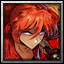

Hero statistics · Season 2
Kenshin
FSA MCB · Recorded ranked matches
Recorded picks6
Win rate50%
Avg K / D / A44.2 / 37.7 / 11.2
Avg damage dealt273.1k
Avg APM127
Players on this hero
Most picks first| # | PLAYER | PICKS | WIN RATE | AVG K / D / A |
|---|---|---|---|---|
| 1 | godaikun Ragna | 2 | 50% | 45.0 / 41.5 / 12.5 |
| 2 | lostvayne Seha Lee 2 | 1 | 100% | 79.0 / 30.0 / 8.0 |
| 3 | roshidere Spirit of Destruction | 1 | 100% | 40.0 / 28.0 / 10.0 |
| 4 | dainsleif Uchiha Itachi | 1 | 0% | 37.0 / 50.0 / 14.0 |
| 5 | efreet17 V バージルースパーダの息子 | 1 | 0% | 19.0 / 35.0 / 10.0 |
Recent matches
WIN52:15
MCB #2000242
19 Nov 2026 · 01:11 WIB
40.0 / 28.0 / 10.0View match →
WIN69:08
MCB #2000230
14 Nov 2026 · 00:16 WIB
49.0 / 43.0 / 13.0View match →
WIN63:39
MCB #2000228
13 Nov 2026 · 01:32 WIB
79.0 / 30.0 / 8.0View match →
LOSS61:44
MCB #2000201
04 Nov 2026 · 00:08 WIB
41.0 / 40.0 / 12.0View match →
LOSS54:28
MCB #2000174
24 Oct 2026 · 01:13 WIB
19.0 / 35.0 / 10.0View match →
LOSS69:32
MCB #2000163
20 Oct 2026 · 20:16 WIB
37.0 / 50.0 / 14.0View match →